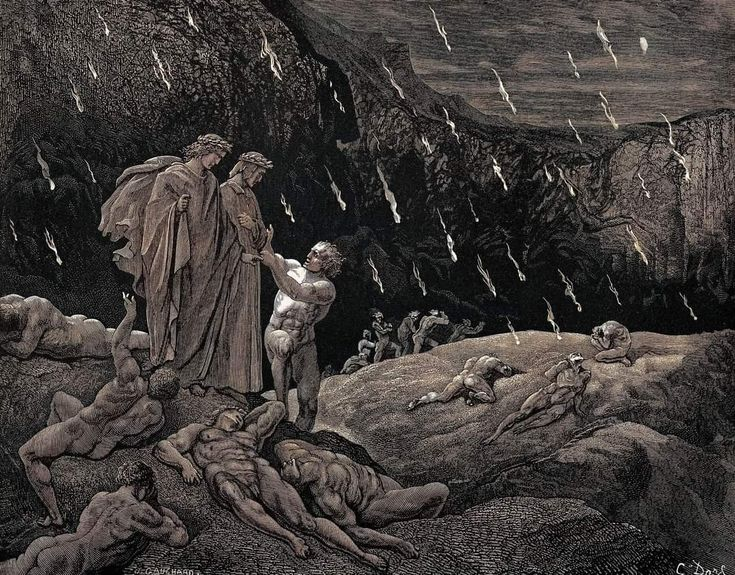

Dante e Virgilio camminano lungo gli argini del Flegetonte, protetti dai vapori del fiume. Incontrano una schiera di anime: sono i Sodomiti (violenti contro natura), condannati a correre senza sosta sotto la pioggia di fuoco. Dante riconosce con emozione Brunetto Latini, suo antico maestro. I due conversano con profondo rispetto; Brunetto loda l'ingegno di Dante e gli predice l'esilio e la gloria futura, esortandolo a seguire la sua stella. Il poeta esprime la sua eterna gratitudine verso l'uomo che gli insegnò "come l'uom s'etterna".
Ancora nel terzo girone, tre anime fiorentine (Guido Guerra, Tegghiaio Aldobrandi e Jacopo Rusticucci) si staccano dal gruppo per parlare con Dante, attratti dal suo abito. Chiedono con ansia notizie sulla corruzione di Firenze; Dante risponde con una dolente invettiva contro la "gente nuova" e i "subiti guadagni". Giunti sull'orlo di un profondo burrone dove precipita il fiume, Virgilio prende la corda che cingeva i fianchi di Dante e la getta nel vuoto. Dal fondo risale una figura mostruosa e inquietante: il demone Gerione.
